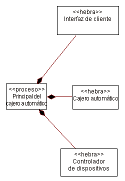
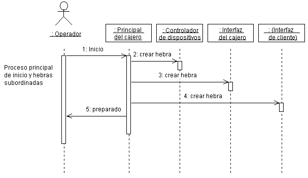
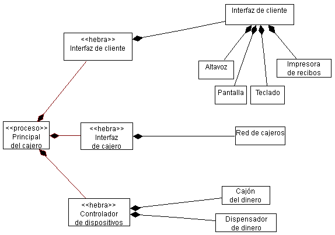

| Tarea: Describir la arquitectura de tiempo de ejecución |
|
 |
| Esta tarea define una arquitectura del proceso para el sistema en términos de clases activas e instancias, y la relación de éstas con los procesos y las hebras del sistema operativo. |
|
Objetivo
-
Analizar los requisitos de concurrencia,
-
Identificar los procesos y su ciclo vital
-
Identificar los mecanismos de comunicación entre procesos y asignar recursos de coordinación entre proceso
-
Distribuir elementos de modelo entre los procesos.
|
Relaciones
| Roles | Principal:
| Adicional:
| Asistencia:
|
| Entradas | Obligatoria:
| Opcional:
| Externa:
|
| Salidas |
|
Descripción principal
Los objetos activos (es decir, las instancias de las clases activas) se utilizan para representar hebras de ejecución
concurrentes en el sistema: de forma nocional, cada objeto activo tiene su propia hebra de control y, de forma
convencional, es la raíz de un marco de pilas de ejecución. La correlación de objetos activos con procesos o hebras
reales del sistema operativo varía según los requisitos de capacidad de respuesta, y estará influida por las
consideraciones de los gastos generales de conmutación del contexto. Por ejemplo, varios objetos activos, en
combinación con un planificador simple, pueden compartir una única hebra del sistema operativo y dar la apariencia de
ejecutarse concurrentemente. No obstante, si alguno de los objetos activos presenta un comportamiento de bloqueo, por
ejemplo, ejecuta una entrada-salida síncrona, los otros objetos activos del grupo no podrán responder a los sucesos que
se producen cuando la hebra del sistema operativo esté bloqueada.
Por otro lado, dar a cada objeto activo su propia hebra del sistema operativo aumentará la capacidad de respuesta,
siempre que los recursos del proceso no se vean afectados negativamente por los gastos generales de conmutación del
contexto adicionales.
En los sistemas en tiempo real, las Producto de
trabajo: Cápsulas son la forma recomendada de concurrencia de modelado; como las clases activas, cada cápsula tiene
su propia hebra de control nocional, aunque las cápsulas tienen una semántica composicional y una encapsulación
adicional para que el modelado de los problemas complejos en tiempo real sea más tratable.
Esta tarea define una arquitectura del proceso para el sistema en términos de clases activas e instancias, y la
relación de éstas con los procesos y las hebras del sistema operativo. De la misma forma, en los sistemas en
tiempo real, la arquitectura del proceso se definirá en términos de cápsulas y una correlación asociada de éstas con
las hebras y los procesos del sistema operativo.
Al principio de la fase de elaboración, esta arquitectura será bastante preliminar, pero al final de la elaboración,
los procesos y las hebras estarán bien definidos. Los resultados de esta tarea se capturan en el modelo de diseño, en
concreto, en la vista de proceso (consulte Concepto: Vista de
proceso).
|
Pasos
|
Analizar los requisitos de concurrencia
|
Objetivo
|
Definir hasta que punto es necesaria la ejecución paralela del sistema. Esta definición ayudará a
perfilar la arquitectura.
|
Durante Tarea: Identificar elementos de diseño, se consideraban requisitos de
concurrencia dirigidos principalmente por demandas de concurrencia naturales en el dominio del problema.
El resultado era un conjunto de clases activas que representaban hebras lógicas de control en el sistema. En los
sistemas en tiempo real, estas clases activas estaban representadas por Producto de
trabajo: Cápsula.
En este paso, consideramos otras fuentes de requisitos de concurrencia, aquellas impuestas por los requisitos no
funcionales del sistema.
Los requisitos de concurrencia están determinados por:
-
El grado con el que se debe distribuir el sistema. Un sistema cuyo comportamiento se debe distribuir entre
varios procesadores o nodos virtualmente requiere una arquitectura de varios procesos. Un sistema que utiliza algún
tipo de sistema de gestión de bases de datos (DBMS) o Transaction Manager también debe tener en cuenta los procesos
que introducen esos subsistemas importantes.
-
La intensidad de cálculo de los algoritmos de claves. Para proporcionar unos tiempos de respuesta correctos,
es recomendable colocar las actividades con una gran carga computacional en una hebra o proceso propio, de forma
que el sistema pueda responder a las entradas de usuario mientras se realizan los cálculos, aunque sea con menos
recursos.
-
El grado de ejecución paralela soportado por el entorno. Si el sistema operativo o el entorno no dan soporte
a las hebras (procesos ligeros), no tiene mucho sentido considerar su efecto en la arquitectura del sistema.
-
La necesidad de tolerancia a errores en el sistema. Los procesadores de copia de seguridad requieren
procesos de copia de seguridad y controlan la necesidad de mantener sincronizados los procesos primarios y de copia
de seguridad.
-
El patrón de llegada de sucesos en el sistema. En los sistemas con sensores o dispositivos externos, los
patrones de llegada de los sucesos entrantes puede variar de un sensor a otro. Algunos sucesos pueden ser
periódicos (por ejemplo, producirse con un intervalo fijo, más o menos una pequeña cantidad) o aperiódicos (por
ejemplo, con un intervalo irregular). Las clases activas que representan dispositivos que generan patrones de
sucesos diferentes se asignarán normalmente a hebras de sistemas operativos diferentes, con algoritmos de
planificación diferentes, para garantizar que se cumplan las horas límite de los procesos o los sucesos (si este es
un requisito del sistema). Este razonamiento se aplica igualmente a las cápsulas, cuando se utilizan en el diseño
de sistemas en tiempo real.
Al igual que ocurre con muchos problemas de arquitectura, estos requisitos pueden ser a veces mutuamente exclusivos. No
es extraño tener, al menos inicialmente, requisitos en conflicto. Establecer un rango de requisitos en términos de
importancia ayudará a resolver el conflicto.
|
Identificar procesos y hebras
|
Objetivo
|
Definir los procesos y las hebras que existirán en el sistema.
|
El enfoque más sencillo es asignar todos los objetos activos a una hebra o proceso común y utilizar un planificador
simple de objetos activos, ya que minimiza los gastos generales de conmutación del contexto. No obstante, en algunos
casos, deberá distribuir los objetos activos entre una o más hebras o procesos. Este es el caso en la mayoría de
sistemas en tiempo real, en el que las cápsulas utilizadas para representar las hebras lógicas a menudo deben cumplir
unos requisitos de planificación estrictos.
Si un objeto activo que comparte una hebra del sistema operativo con otros objetos activos hace una llamada síncrona a
otro proceso o hebra, y esta llamada bloquea la hebra del sistema operativo compartido del objeto de la invocación, se
suspenderán automáticamente los demás objetos activos ubicados en el proceso de la invocación. Ahora bien, este no
tiene que ser el caso siempre: una llamada que es síncrona desde el punto de vista del objeto activo, se puede manejar
de forma asíncrona desde el punto de vista del planificador simple que controla el grupo de objetos activos; el
planificador suspende el objeto activo que hace la llamada (esperando la finalización de la llamada síncrona) y
planifica otros objetos activos para que se ejecuten.
Cuando finaliza la operación 'síncrona' original, el objeto activo de la invocación se puede reanudar. No obstante, en
algunos casos no se puede aplicar este enfoque, si no es factible diseñar el planificador para que intercepte todas las
llamadas síncronas antes de que se bloqueen. Tenga en cuenta que, generalmente, el planificador puede manejar de esta
forma una invocación síncrona entre objetos activos que utilizan el mismo proceso o hebra del sistema operativo; y lo
mismo ocurre con una llamada de procedimiento desde el punto de vista del objeto activo de la invocación.
Esto nos lleva a la conclusión que los objetos activos se deben agrupar en procesos o hebras según la necesidad de
ejecutarse concurrentemente con invocaciones síncronas que bloquean las hebras. Es decir, la única vez que un objeto
activo se debe empaquetar en el mismo proceso o hebra con otro objeto que utiliza invocaciones síncronas que bloquean
la hebra es si no necesita ejecutarse simultáneamente con ese objeto y puede tolerar que se anule su ejecución mientras
el otro objeto está bloqueado. En el caso extremo, cuando la capacidad de respuesta es crítica, esto puede llevar a la
necesidad de una hebra o proceso independiente para cada objeto activo.
En los sistemas en tiempo real, las interfaces de cápsulas basadas en mensajes significan que es más sencillo concebir
un planificador que garantice, al menos para las comunicaciones de cápsula a cápsula, que las hebras del sistema
operativo de soporte no estén nunca bloqueadas, aunque una cápsula se comunique de forma síncrona con otra cápsula. No
obstante, una cápsula también puede emitir una solicitud directamente al sistema operativo, por ejemplo, para un tiempo
de espera síncrona excedido, que bloqueará la hebra. Se deben establecer convenios que eviten este comportamiento para
los servicios de nivel inferior invocados por las cápsulas, si las cápsulas deben compartir una hebra común (y utilizar
un planificador simple para simular la concurrencia).
Como norma general, en los casos anteriores, es mejor utilizar hebras ligeras en lugar de procesos completos, ya que
ello implica un gasto general menor. No obstante, podemos aprovechar algunas de las características especiales de los
procesos en algunos casos concretos. Como las hebras comparten el mismo espacio de direcciones, son inherentemente más
arriesgadas que los procesos. Si la posibilidad de sobrescrituras accidentales es un problema, se prefieren los
procesos. Asimismo, como los procesos representan unidades de recuperación independientes en la mayoría de sistemas
operativos, puede ser útil asignar objetos activos a los procesos según la necesidad de recuperarse independientemente
unos de otros. Esto es, todos los objetos que se deban recuperar como una unidad se deben empaquetar conjuntamente en
el mismo proceso.
Para cada flujo de control aparte que necesite el sistema, cree un proceso o una hebra (proceso ligero). La hebra se
debe utilizar en aquellos casos en los que se necesite un flujo de control anidado (por ejemplo, si dentro de un
proceso hay necesidad de flujo de control independiente a nivel de subtareas).
Por ejemplo, se necesitan hebras de control aparte para:
-
Separar problemas entre distintas áreas de software
-
Aprovechar varias CPU en un nodo o varios nodos en un sistema distribuido
-
Aumentar la utilización de la CPU mediante la asignación de ciclos a otras actividades cuando se suspende una hebra
de control
-
Priorizar actividades
-
Dar soporte al compartimiento de carga entre varios procesos y procesadores
-
Aumentar la disponibilidad del sistema mediante procesos de copia de seguridad
-
Dar soporte a DBMS, Transaction Manager u otros subsistemas principales.
Ejemplo
En el cajero automático, se deben manejar sucesos asíncronos provenientes de tres orígenes diferentes: el usuario del
sistema, los dispositivos de cajero automático (por ejemplo, en el caso de un atasco en el dispensador de dinero) o la
red de cajeros automáticos (en el caso de una directiva de cierre de la red). Para manejar estos sucesos asíncronos,
podemos definir tres hebras de ejecución independientes dentro del propio cajero automático, tal como se muestra a
continuación, utilizando clases activas en el cajero automático.

Procesos y hebras dentro del cajero automático
|
Identificar ciclos vitales de los procesos
|
Objetivo
|
Identificar cuándo se crean y destruyen los procesos y las hebras.
|
Cada proceso o hebra de control se debe crear y destruir. En una arquitectura de un solo proceso, la creación del
proceso se realiza cuando se inicia la aplicación y la destrucción del proceso cuando finaliza la aplicación. En
arquitecturas de varios procesos, los nuevos procesos (o hebras) se despliegan o se bifurcan del proceso inicial creado
por el sistema operativo cuando se inicia la aplicación. Estos procesos se deben destruir también explícitamente.
La secuencia de sucesos que lleva a la creación y la destrucción de procesos se debe determinar y documentar, así como
el mecanismo de creación y supresión.
Ejemplo
En el cajero automático, se inicia un proceso principal que es responsable de la coordinación del comportamiento de
todo el sistema. A su vez, despliega un número de hebras de control subordinadas para supervisar las distintas partes
del sistema: los dispositivos del sistema y los sucesos que surgen del cliente y de la red de cajeros automáticos. La
creación de estos procesos y hebras se puede mostrar con clases activas en UML, y la creación de instancias de
estas clases activas se puede ilustrar en un diagrama de secuencia, tal como se muestra a continuación:

Creación de procesos y hebras durante la inicialización del sistema
|
Identificar mecanismos de comunicación entre procesos
|
Objetivo
|
Identificar los medios que utilizarán los procesos y las hebras para comunicarse.
|
Los mecanismos de Comunicación entre procesos (IPC) permiten enviar mensajes entre objetos que se ejecutan en procesos
separados.
Los mecanismos de comunicación entre procesos típicos son:
-
Memoria compartida, con o sin semáforos para garantizar la sincronización.
-
Encuentros, especialmente cuando están soportados directamente por un lenguaje como Ada
-
Semáforos, utilizados para bloquear el acceso simultáneo a recursos compartidos
-
Paso de mensajes, de punto a punto y de punto a multipunto
-
Buzones
-
RPC: llamadas a procedimientos remotos
-
Difusión de sucesos, utilizando un "bus de software" ("arquitectura de bus de mensaje")
La elección del mecanismo de IPC cambiará la forma en que está modelado el sistema; por ejemplo, en una "arquitectura
de bus de mensaje", no hay necesidad de asociaciones explícitas entre los objetos para enviar mensajes.
|
Asignar recursos de coordinación entre procesos
|
Objetivo
|
Asignar recursos escasos
Anticipar y gestionar los posibles cuellos de botella de rendimiento
|
Los mecanismos de comunicación entre procesos suelen ser escasos. Los semáforos, la memoria compartida y los buzones
tienen normalmente un tamaño o un número fijo, y no se pueden aumentar sin un coste significativo. RPC, los mensajes y
las difusiones de sucesos absorben cada vez más un ancho de banda de red escaso. Cuando el sistema excede un umbral de
recursos, normalmente experimenta una disminución no lineal del rendimiento; cuando se utiliza un recurso escaso, las
posteriores solicitudes del recurso tienen probablemente un efecto negativo.
Si los recursos escasos no están disponibles, se pueden seguir varias estrategias:
-
reducir la necesidad del recurso escaso mediante la reducción del número de procesos
-
cambiar el uso de los recursos escasos (para uno o más procesos, elegir un recurso diferente, menos escaso, para el
mecanismo de IPC)
-
aumentar la cantidad del recurso escaso (por ejemplo, aumentando el número de semáforos). Esto se puede hacer para
cambios relativamente pequeños, pero normalmente tiene efectos secundarios o límites fijos.
-
compartir el recurso compartido (por ejemplo, asignar el recurso sólo cuando sea necesario y dejarlo libre cuando
haya terminado). Esta estrategia es muy cara y puede anticipar la crisis de recursos.
Independientemente de la estrategia elegida, el sistema debe disminuir el rendimiento paulatinamente (sin llegar a
bloquearse) y debe proporcionar la información necesaria a un administrador del sistema para que pueda resolver el
problema (si es posible) en el campo una vez desplegado el sistema.
Si el sistema requiere una configuración especial del entorno de tiempo de ejecución para poder aumentar la
disponibilidad de un recurso crítico (a menudo controlado por la reconfiguración del kernel del sistema operativo), la
instalación del sistema debe hacerlo automáticamente, o solicitar a un administrador del sistema que lo haga antes de
que el sistema esté operativo. Por ejemplo, puede que tenga que reiniciar el sistema para que se apliquen los cambios.
|
Correlacionar los procesos con el entorno de implementación
|
Objetivo
|
Correlacionar los "flujos de control" con los conceptos soportados por el entorno de implementación.
|
Los procesos conceptuales se deben correlacionar con constructos específicos en el entorno operativo. En muchos
entornos, hay opciones de tipos de proceso, como mínimo, de procesos y hebras. Las opciones se basarán en el grado de
emparejamiento (los procesos son autónomos, mientras que las hebras se ejecutan en el contexto de un proceso inclusivo)
y en los requisitos de rendimiento del sistema (la comunicación entre procesos entre varias hebras normalmente es más
rápida y eficaz que entre varios procesos).
En muchos sistemas, puede haber un número máximo de hebras por proceso o de procesos por nodo. Estos límites puede que
no sean absolutos, sino límites prácticos impuestos por la disponibilidad de los recursos escasos. Se deben tener en
cuenta las hebras y los procesos que se están ejecutando en un nodo de destino junto con las hebras y los procesos
propuestos en la arquitectura del proceso. Los resultados del paso anterior, Asignar Recursos de coordinación entre procesos, se deben tener
en cuenta cuando se realice la correlación para asegurarse de que no se está creando un nuevo problema de rendimiento.
|
Correlacionar elementos de diseño con hebras de control
|
Objetivo
|
Determinar en qué hebras de control se deben ejecutar las clases y los subsistemas.
|
Las instancias de una determinada clase o subsistema se deben ejecutar como mínimo en una hebra de control que
proporcione el entorno de ejecución de la clase o el subsistema; de hecho, se pueden ejecutar en varios procesos
diferentes.
Utilizando dos estrategias diferentes simultáneamente, se determina la cantidad de concurrencia "correcta" y se define
el conjunto de procesos "correcto":
De dentro a fuera
-
A partir del modelo de diseño, agrupe las clases y los subsistemas en conjuntos de elementos cooperativos que (a)
cooperen estrechamente entre ellos y (b) deban ejecutarse en la misma hebra de control. Considere el efecto de
introducir la comunicación entre procesos en medio de una secuencia de mensajes antes de separar los elementos en
hebras de control independientes.
-
Por otra parte, separe las clases y los subsistemas que no interactúen en absoluto, y colóquelos en hebras de
control independientes.
-
Esta agrupación continua hasta que el número de procesos se haya reducido al número mínimo que todavía permita la
distribución y el uso de los recursos físicos.
De fuera a dentro
-
Identifique los estímulos externos a los que el sistema deba responder. Defina una hebra de control aparte para
manejar cada estímulo y una hebra de control de servidor aparte para proporcionar cada servicio.
-
Tenga en cuenta las restricciones de serialización y la integridad de los datos para reducir este conjunto inicial
de hebras de control a un número que pueda soportar el entorno de ejecución.
Este no es un proceso lineal y determinista que dé como resultado una vista óptima del proceso; requiere algunas
iteraciones para alcanzar un compromiso aceptable.
Ejemplo
En el siguiente diagrama se muestra cómo se distribuyen las clases dentro del cajero automático entre los procesos y
las hebras del sistema.

Correlación de clases con procesos para el cajero automático
|
|
Propiedades
| Varias apariciones |  |
| Condicionado por sucesos | |
| Continuo | |
| Opcional | |
| Planeado | |
| Se puede repetir | |
Más información
| Conceptos |
|
| Directrices |
|
| Instrucciones de la herramienta |
|
© Copyright IBM Corp. 1987, 2006. Reservados todos los derechos.
|
|